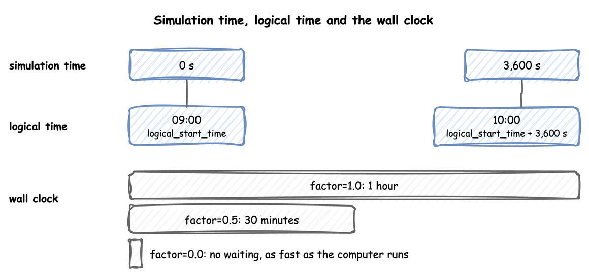
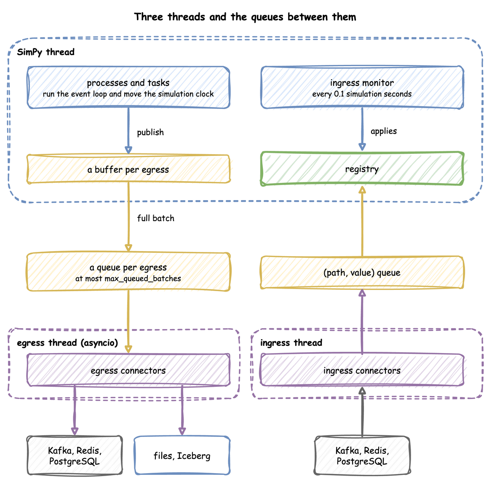

Time and Pacing
A run has two clocks of its own, simulation time and logical time. A run can follow the wall clock, ignore it, or ignore it at first and follow it later. This page shows how to read the current time and which parts of the environment run on each thread. Clocks and Pacing shows the clock settings, and Run Length shows the warm-up and how long a run lasts.
What It Is
Simulation time is the number of seconds SimPy has advanced, starting at initial_time, 0 by default. Every record carries it as sim_ts. Logical time is the date and time a record carries as timestamp: logical_start_time plus the simulation time. factor sets how simulation time relates to the wall clock, and go_live_at switches that relation once during a run. One hour of simulation time is one hour of logical time, and takes as long on the wall clock as factor says:

The settings are the same on DynamicRealtimeEnvironment, on SimulationContext and in the simulation section of a blueprint.
Pages in This Section
- Clocks and Pacing: the logical start time, the time zone, the factor, going live, the lag and strict pacing.
- Run Length: the warm-up, the initial time, how long a run lasts, stopping early, draining, stepping and running in segments.
How to Use It
Read the Current Time
t is the simulation clock in a condition or an expression, the value of context.env.now in the builder and env.now in the low-level API. A route or a balk can depend on it, such as next: {when: [{condition: "t < 110", task: early}], default: late}. A wait: {condition: ...} that reads t is not a timer. A condition is checked again only after a change of state, not as time passes. To wait for a time, use a timeout branch.
How It Works
What the environment holds. A DynamicRealtimeEnvironment is SimPy's RealtimeEnvironment with four additions: the registry at env.registry, the ingress connectors, the egress connectors with their buffers, and the statistics at env.stats.
Threads. A run uses three threads, with queues between them. Records flow from the processes to the sinks, and parameter changes flow from the sources to the registry:

- SimPy thread: runs the model. When a process publishes a record, the record goes into a buffer for each sink, and a full buffer is handed to that sink's queue.
- Egress thread: runs the sinks' asyncio code, which drains the queues and writes to Kafka, files or databases, so network waits never stall a simulation step.
- Ingress thread: runs the sources, which put
(path, value)pairs on a queue.
Processes it starts. Besides your own processes, the environment starts these, as events of its own that step() and peek() do not count:
- an ingress monitor, which applies queued changes every 0.1 simulation seconds;
- a lag monitor, which publishes
system.simulation.lag_secondseverylag_interval, at afactorabove 0 or after going live; - a timed flush per sink, at a
factorabove 0; - the statistics timer;
- the warm-up reset.
They share SimPy's one event queue with the model's events, so run() processes them in order with the model's events. A script that steps the model never sees them. advance() and finish() run them in the same way. An environment subclass that overrides step() sees every event inside run(), desflow's own included, and only the model's events when a script steps outside run().
Pacing and the switch. Before each event, the environment checks the logical clock. At the first event at or after go_live_at, it sets the factor to 1.0 and moves its two anchors, env_start and real_start, so that the go-live instant counts as now. Without this move, the first paced event would wait on the wall clock for the whole backfill. The switch happens once, and always sets the factor to 1.0. A go_live_at at or before logical_start_time paces the whole run, with a warning. A run that ends before its go_live_at stays unpaced. A go_live_at or logical_start_time without an offset is read in the run's time zone, so the two can be compared whichever way each is written.
The end of the model and the end of the run. The model ends when the clock stops: at until, at a stop, or when a drain empties the model. The run ends after that, at close(), which run() calls in a finally block. close() publishes the last statistics, still stamped at the time the model ended. It then flushes and stops the egress connectors, and then stops the ingress connectors. A sink may take a while to drain its queue, but no record it receives is later than the model's end.
SimPy and desflow. SimPy's RealtimeEnvironment takes one factor for the whole run. With strict=True, it raises an error when the model falls behind the wall clock. desflow runs without waiting at factor: 0, switches to real time at go_live_at, and stamps every record with a logical time. By default it reports falling behind as telemetry, and with strict=True it raises, as SimPy's does. SimPy and desflow compares the two.
Stability and Limits
- A run with a sink or ingress needs
until, or Ctrl+C, as Run Length explains. - At
factor: 0no timed flush runs, so records leave a buffer when it reachesbatch_sizeand at teardown, as Egress explains.LocalIngressfollows the wall clock, so its changes can land after an unpaced run has ended. A scenario follows the simulation clock. Nosystem.simulation.lag_secondsis published unlesslag_intervalis set, and it reports 0 while the run is ahead of the wall clock. warmupdrops,go_live_atroutes. Records before a warm-up are gone. Records beforego_live_atgo to the sinks that take history.- A model slower than the wall clock falls behind at
factor: 1.0and does not catch up by skipping events.lag_secondsshows by how much.